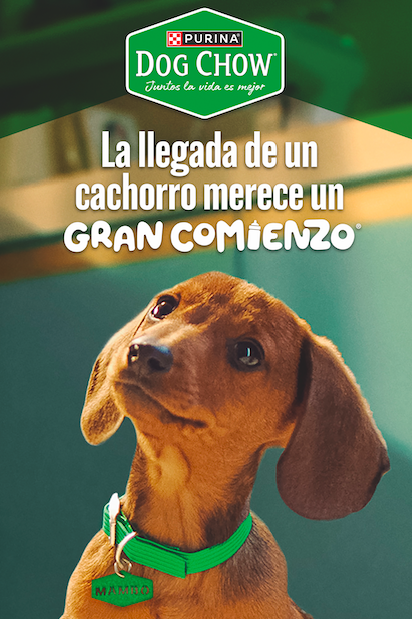

El preferido de los gatitos

Elige siempre darles lo mejor
La relación entre mascotas y sus dueños es un vínculo profundo de amor incondicional, lealtad y beneficios mutuos para la salud física y emocional. Más que compañeros, las mascotas son consideradas miembros de la familia que ofrecen compañía y consuelo. Estudios sugieren que los perros y dueños pueden desarrollar similitudes en personalidad y apariencia con el tiempo.
La tendencia a preferir mascotas sobre hijos se debe principalmente a factores económicos, la búsqueda de mayor libertad personal, cambios en las prioridades de vida (enfoque profesional) y la necesidad de compañía con menores responsabilidades a largo plazo. Las mascotas ofrecen afecto y protección sin las altas cargas financieras que implica la crianza.
El preferido de los gatitos